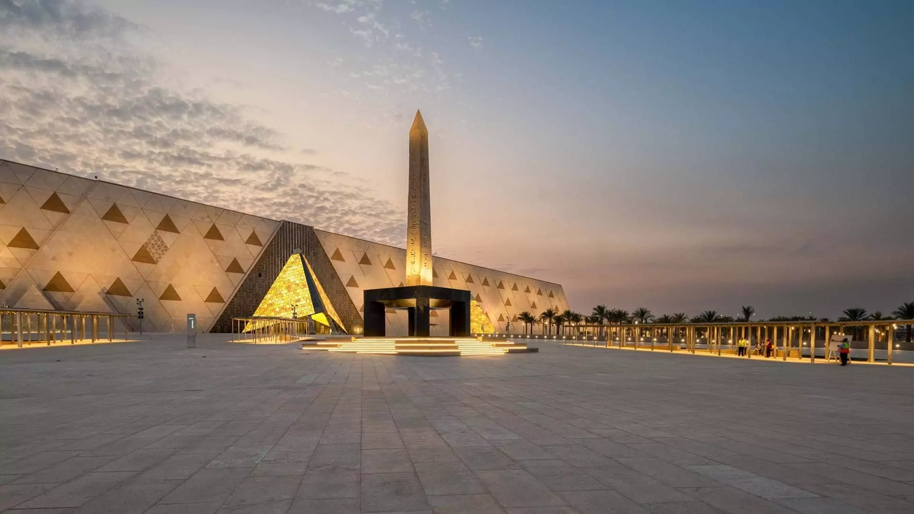
Hanging Obelisk
The Hanging Obelisk in the GrandEgyptian Museum is a unique monument displayed in a suspended position,
allowing visitors to see its base for the first time. It is made of red granite and features inscriptions of King Ramesses II,
showing the beauty and engineering skill of ancient Egypt.
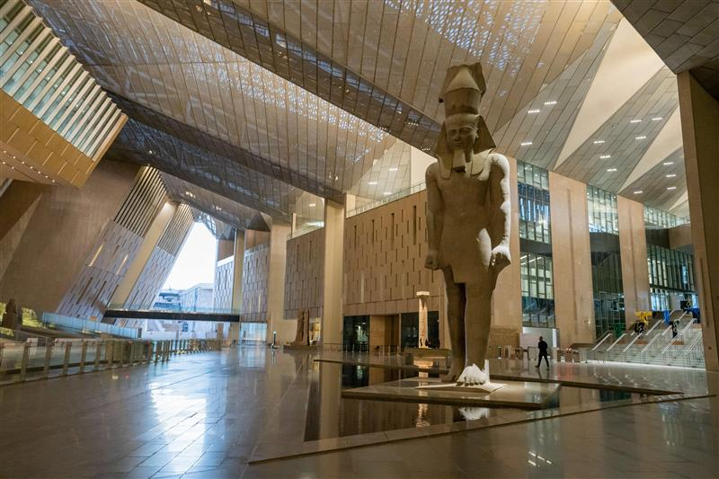
Main Hall
The Main Hall of the Grand Egyptian Museum is a large entrance space that welcomes visitors with impressive statues,
including a giant statue of Ramesses II. It gives a powerful first impression and introduces
the greatness of ancient Egyptian civilization.
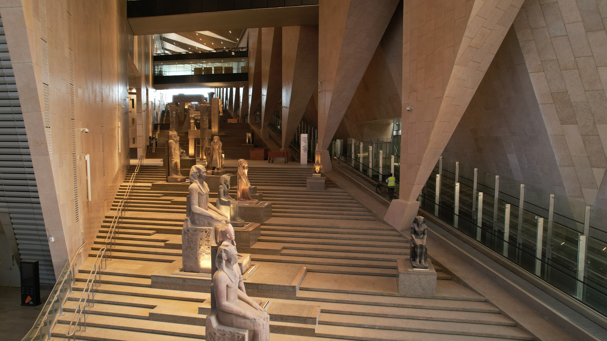
Grand Stairs
The Grand Stairs in the Grand Egyptian Museum is a wide staircase lined with large ancient statues and artifacts.
It leads visitors through different periods of ancient Egyptian history in a dramatic and impressive way.
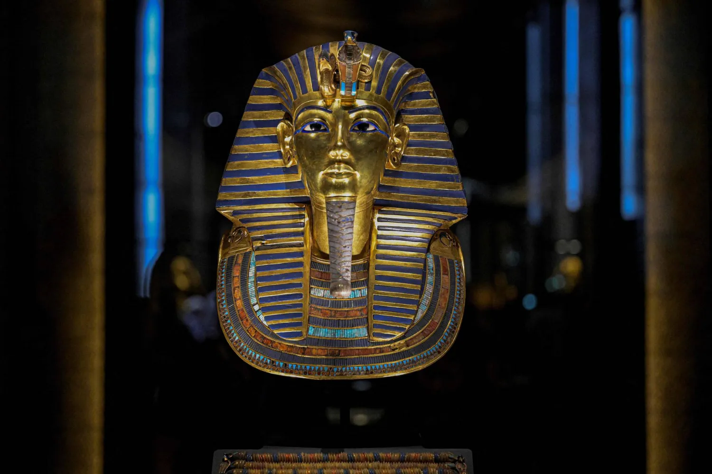
King Tutankhamun
Tutankhamun was a young pharaoh of ancient Egypt, famous for his rich tomb and treasures.
His collection, displayed in the Grand Egyptian Museum, includes his golden mask and many valuable artifacts.
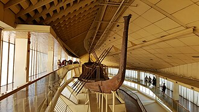
Khufu Ship
The Khufu Ship is an ancient wooden boat discovered near the Great Pyramid of Khufu.
It is displayed in the Grand Egyptian Museum and is one of the oldest and best-preserved ships in the world,
showing the skill of ancient Egyptian engineering.
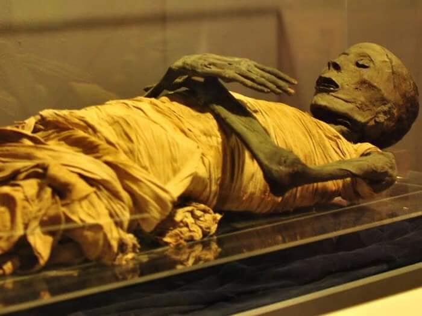
Royal Mummies
The Royal Mummies gallery in the Grand Egyptian Museum displays the preserved bodies of ancient Egyptian kings and queens,
including rulers like Ramesses II. It shows how advanced ancient Egypt was in preservation and gives insight into the lives
of its royal family.
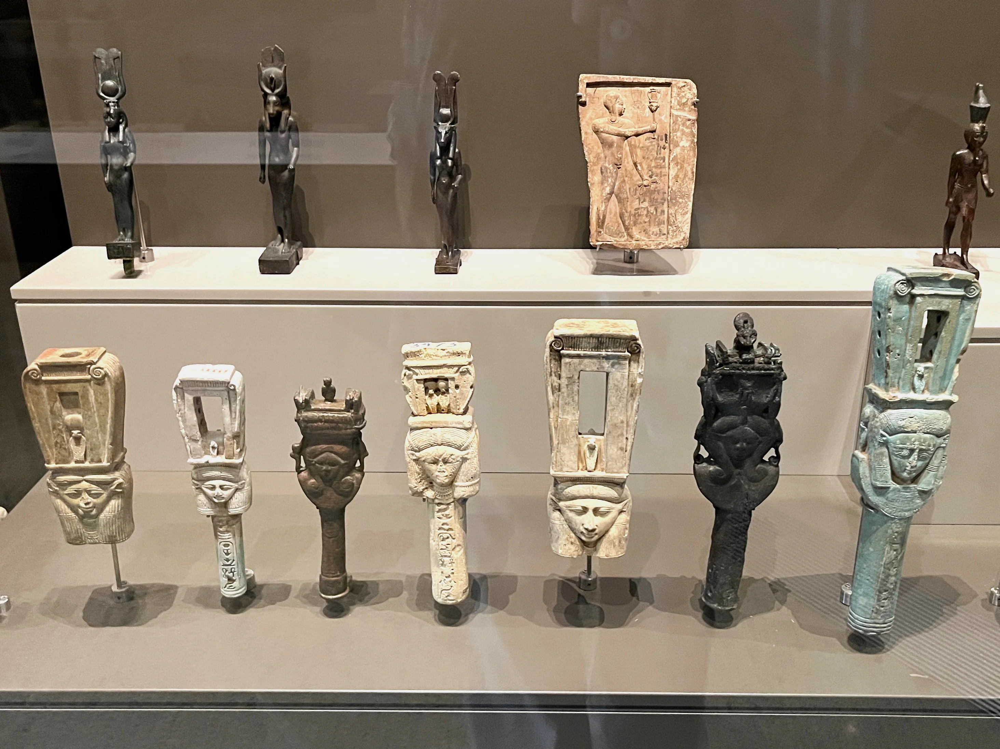
Ancient Statue
A statue representing the artistic skills of ancient Egyptian sculptors.

Statue Ramses II
The statue of Ramesses II is a large ancient Egyptian sculpture showing the pharaoh with strong and royal features.
It represents power, authority, and the greatness of the king, and is known for its detailed design and massive size.
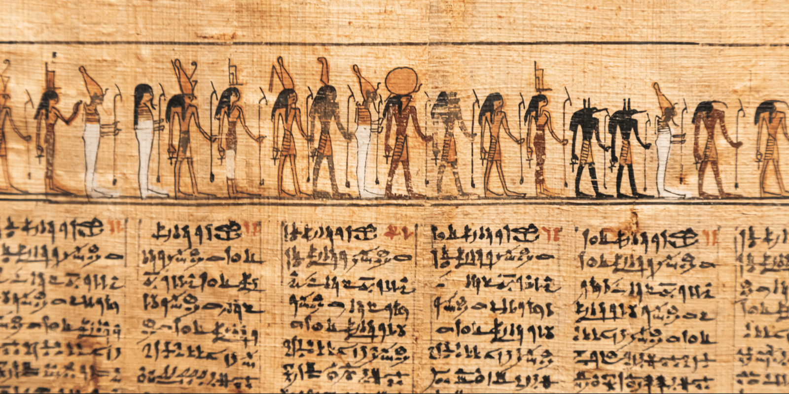
Papyrus Collection
A unique collection of ancient papyrus manuscripts that reveal writing, art, and daily life in ancient Egypt.
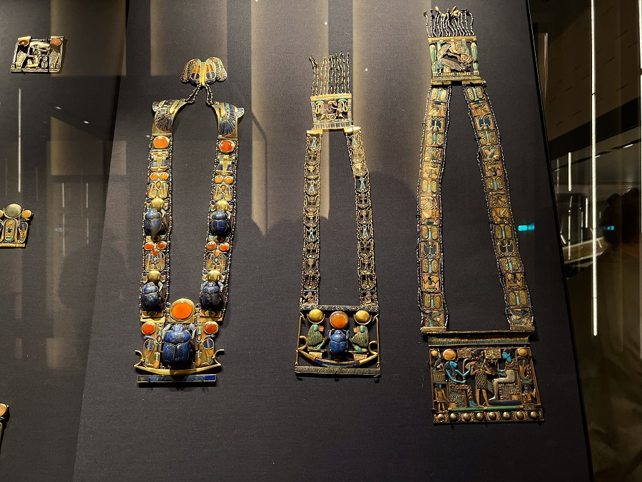
Artifacts Collection
A variety of artifacts that show daily life and culture in ancient Egypt.
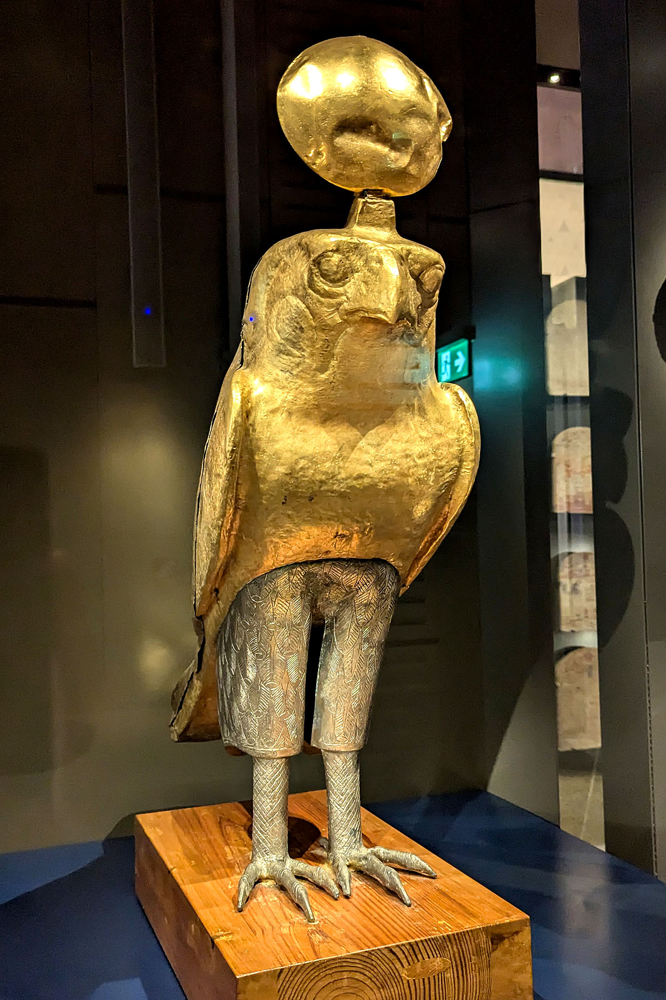
Golden Falcon Statue
A golden falcon statue representing the god Horus, symbolizing protection, power,
and kingship in ancient Egyptian mythology.
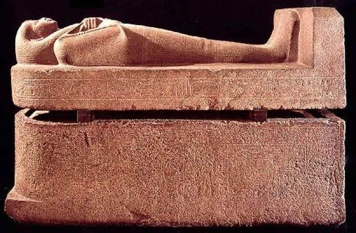
Sarcophagus of Nitocris
A massive granite sarcophagus of Nitocris, Divine Adoratrice of Amun Re and daughter of King Psamtik I, depicting her as a mummy with crossed arms holding a crook and flail, blending New Kingdom royal form with Saite-style facial features.
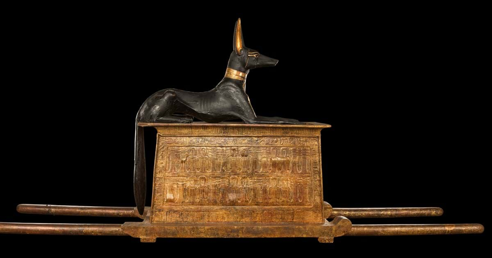
Anubis on a Chest
A gilded pylon-shaped carrying chest on a sledge, topped with a black-and-gold Anubis jackal figure, found in the Treasury and containing cult objects and jewellery in its five inner compartments.
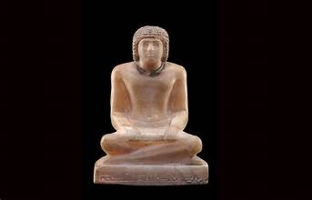
Statue of the Royal Scribe Rahotep
A seated statue of Rahotep, a highly esteemed Dynasty 5 royal scribe from Saqqara, depicted cross-legged in a short curly wig and painted collar, with his titles and name inscribed on the base.
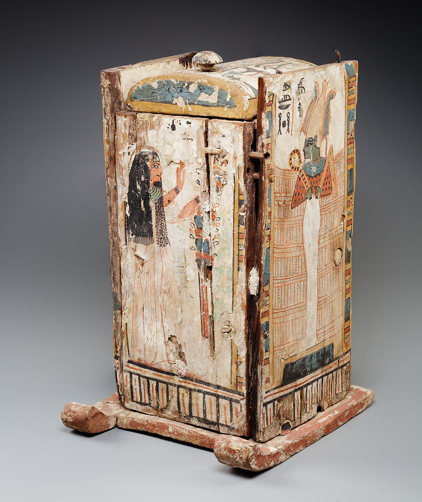
Shabti Box of Djedmaatiuesankh
A painted wooden Dynasty 21 shabti box of Djedmaatiuesankh, Chantress of Amun-Re, featuring a barrel-vaulted lid and decorated with Anubis holding the crook and flail, the owner on a papyrus boat, and solar and funerary symbols symbolizing protection and resurrection in the afterlife.